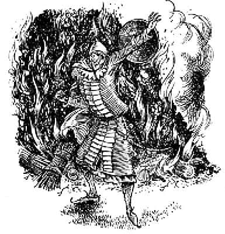
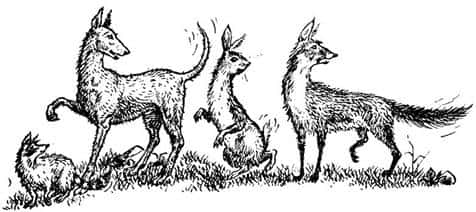
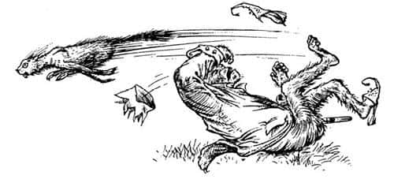
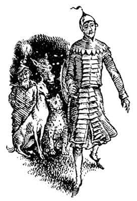

Ahıra Kim Girecek?
Jill bir şeyin kulağını gıdıkladığını hissetti. Cevher, o kocaman ağzıyla Jill’in kulağına bir şeyler fısıldadı. Jill, Cevher’in söylediklerini duyar duymaz başını sallayıp sessizce Şaşkaloz’un yanına gitti. Aceleyle aslan postunun bağlarını kesti. Maymun’un anlattıklarından sonra üzerinde postla yakalanması hiç de iyi olmazdı. Postu çok uzaklarda bir yere saklamak isterdi, ama çok ağırdı. Yapabileceğinin en iyisini yaptı ve onu sık çalılıkların arasına gizledi. Sonra Şaşkaloz’a işaret ederek kendisini takip etmesini söyledi. Gidip diğerlerine katıldılar.
Maymun tekrar konuşmaya başlamıştı.
“Böylesine iğrenç bir olaydan sonra Aslan - yani Taşlan - öncekinden daha da kızgın. Her akşam size görünmek için dışarı çıkmakla size fazla iyi davrandığını söylüyor. Eh, artık dışarı çıkmayacak.”
Hayvanların buna cevabı, ulumalar, miyavlamalar, tiz çığlıklar ve homurtulardı, ama aniden kahkahalar atarak bağıran birinin oldukça farklı sesi duyuldu.
“Maymun’a kulak verin” diye bağırdı. “Değerli Aslan’ını neden dışarı çıkarmayacağını hepimiz biliyoruz. Size nedenini söyleyeyim: Aslan orada değil. Sırtında aslan postu olan bir eşekten başka hiçbir şey yoktu orada. Şimdi onu kaybettiği için ne yapacağını bilemiyor.”
Tirian, ateşin öte yanındaki yüzleri pek iyi göremese de bunun Cücelerin Reisi Kıkır olduğunu tahmin edebiliyordu. Bir saniye sonra tüm cücelerin, “Ne yapacağını bilemiyor! Ne yapacağını bilemiyor! Ne yapacağını bilemiyor! Ne yapacağını bilemiyo-o-o-o-r!” diye şarkı söyleyerek ona katıldığını duyduğundaysa emindi artık.

“Susun!” diye gürledi Rishda Tarkaan. “Susun çamurun çocukları! Diğer Narnialılar beni dinlesin, yoksa savaşçılarıma keskin kılıçlarıyla üzerinize çullanmaları için emir veririm. Lord Külyutmaz size daha önce o kötü hayvandan bahsetmişti. Gerçek Taşlan’ın ahırda olmadığını mı düşünüyorsunuz? Öyle mi? Dikkatli olun, dikkatli olun.”
“Hayır, hayır” diye bağırdı çoğu. Cüceler, “Doğru be adam, şimdi anladın. Haydi Maymun, ahırdakini bize göster. Görmek inanmaktır” dedi sadece.
Maymun ortalık sessizleştiğinde, “Siz cüceler çok akıllı olduğunuzu sanıyorsunuz, değil mi? O kadar acele etmeyin. Taşlan’ı göremeyeceğinizi söylemedim. Dileyen onu görebilir” dedi.
Herkes sustu. Bir süre sonra, Ayı yavaş ve şaşkın bir sesle konuşmaya başladı.
“Olanları anlayamıyorum” diye şikâyete başladı. “Düşünüyordum ki sen—”
“Düşünüyordun!” diye tekrarladı Maymun. “Sanki senin aklından geçenlere düşünce denebilirmiş gibi. Herkes dinlesin. Dileyen Taşlan’ı görebilir. Ama o dışarı çıkmayacak. Sizin girip görmeniz gerekiyor.”
“Ah, teşekkürler, teşekkürler, teşekkürler” dedi düzinelerce ses. “İstediğimiz buydu. İçeriye girip onunla yüz yüze görüşebiliriz. Nazikleşecek ve her şey eskisi gibi olacak.” Kuşlar cıvıldıyor, köpekler heyecanla havlıyordu. Sonra büyük bir hareketlilik yaşandı ve kalabalık büyük bir gürültüyle ayağa kalktı. Bir saniye içinde hepsi ileriye fırlayıp ahırın kapısına üşüşecekti ama Maymun, “Durun! Susun! O kadar çabuk değil” diye bağırdı.
Hayvanların birçoğu kuyruklarını sallayarak tek ayakları havada, öylece kalakaldı; gözleri aynı yere bakıyordu.

“Senin şey dediğini sanmıştık” diye başladı Ayı, ama Külyutmaz sözünü kesti.
“Herkes girebilir” dedi, “ancak birer birer. İlk kim girmek istiyor? Keyfinin yerinde olmadığını söyledi. Önceki gece o kötü kralı yuttuğundan beri dudaklarını yalayıp duruyordu. Bu sabah epeyce hırladı. Doğrusu kendi adıma bu gece ahıra girmeyi pek istemem. İstediğinizi yapın. İlk kim girecek? Tek parça halinde yutar ya da dehşet dolu bakışlarınıza aldırmayıp sizi küle çevirirse karışmam. Size kalmış. Evet, haydi bakalım! Önce kim girecek? Cücelerden ne haber?”
“Ivır zıvır, gel ve geber!” dedi Kıkır küçümseyerek. “Orada ne olduğunu nerden bilelim?”
“O-o-o!” diye bağırdı Maymun. “Orada bir şey olduğunu düşünmeye başladın ha? Pekâlâ, siz hayvanlar az önce bir hayli gürültü yapıyordunuz. Sesiniz niye kesildi? Önce kim girecek içeriye?”
Hayvanların hepsi birbirlerine bakarak ahırdan uzaklaşmaya başlıyordu. Artık çok azı kuyruk sallıyordu. Maymun ise alay ederek paytak paytak yürüyordu. “Ho-ho-ho!” diye gülüyordu. “Hepinizin Taşlan’ı görmeye can attığını sanıyordum! Fikrinizi değiştirdiniz ha?”
Tirian, Jill’in kulağına fısıldadığı şeyi duymak için eğildi. “Sence ahırın içinde ne var?” dedi Jill. “Kim bilir?” dedi Tirian. “Kapının her iki yanında kılıçlarını çekmiş bekleyen Calormenliler olabilir, bu mümkün.” “Gördüğümüz o… iğrenç şeyin… orada olduğunu… düşünmüyorsun değil mi?” dedi Jill. “Taş mı?” diye fısıldadı Tirian. “Bilinmez. Cesur olmalısın; hepimiz gerçek Aslan’ın emrindeyiz.”
Sonra çok şaşırtıcı bir şey oldu. Kedi Kızıltüy, hiç de heyecanlı gibi görünmeyen soğuk ve berrak bir sesle, “İsterseniz ben girerim” dedi.
Hepsi dönüp gözlerini kediye dikmişti. “Ona dikkat edin, efendim” dedi Zıpır, Kral’a. “Bu lanetli kedi oyunun tam da ortasında. Ahırdaki her neyse, eminim ona dokunmayacak, sonra Kızıltüy dışarı çıkıp şaşırtıcı bir şey gördüğünü söyleyecek.”
Tirian’ın ona cevap verecek zamanı yoktu. Maymun kedinin öne çıkmasını söylüyordu. “Ho-ho-ho” dedi, “sen, arsız pisi, onun yüzüne bakacaksın ha? Haydi öyleyse! Sana kapıyı açacağım. Korkudan bıyıkların düşerse beni suçlama. Sen kaşındın.”
Kedi ayağa kalktı, kuyruğu havada, parlak kürkündeki tek bir tüy bile kıpırdamadan ciddiyet ve zarafetle yürüyerek öne çıktı. Ateşi geçene kadar yürüdü, öylesine yakına geldi ki, Tirian durduğu yerden dimdik kedinin yüzüne bakabiliyordu. Kedi, büyük yeşil gözlerini hiç kırpmadı. “Su gibi sakin” diye mırıldandı Eustace. “Korkacak bir şey olmadığını biliyor.” Maymun kıkırdayarak, yüzünü buruşturup alay ederek kedinin yanına geldi, kilidin dilini çekti ve kapıyı açtı. Tirian, karanlık kapıya doğru yürürken kedinin mırladığını duyduğunu sanmıştı.
“Miyavvvv-avii-avvvv!” Duyabileceğiniz en korkunç kedi çığlığı herkesi yerinden sıçrattı. Gece yarısı kediler kavga ederken ya da çiftleşirken uyanmışsanız, o sesi kesin duymuşsunuzdur.
Bu çok daha kötü bir sesti. Ahırdan son süratle çıkan Kızıltüy Maymun’u başaşağı yere devirdi. Kedi olduğunu bilmeseydiniz, kızıl renkli bir şimşek zannederdiniz. Çimenliği hızla geçip kalabalığa karıştı; kimse bu haldeki bir kediyle karşılaşmak istemez. Hayvanlar kedinin geçebilmesi için sağa sola çekiliyordu. Hızla bir ağaca tırmandı, başı geldiği yöne dönük öylece durdu. Kuyruğu ve sırtındaki tüm tüyler kabarmış, vücudunun büyüklüğü neredeyse iki katına çıkmıştı; gözleri yemyeşildi, ateş çemberlerine benziyordu.

“Bu hayvan rol mü yapıyor, yoksa gerçekten korkuyor mu; bunu öğrenebilmek için sakalımı bile keserdim” diye fısıldadı Zıpır.
“Sessiz ol dostum” dedi Tirian. Yüzbaşıyla Maymun fısıldaşıyor, Kral ne dediklerini duymak istiyordu. Duyabildiği tek şey Maymun’un bir kez daha, “Başım, başım” diye inlemesiydi. Sanki Yüzbaşı ve Maymun da kediye en az kendisi kadar şaşırmışlardı.
“Kızıltüy” dedi Yüzbaşı. “Kes şunu ve gördüklerini anlat.”
“Miy - miy - miyaaavvv - aaavvv” diye bağırdı Kedi.
“Sen konuşan kedi değil misin?” dedi Yüzbaşı. “Bu şeytani sesi kes ve konuş.”
Bundan sonra olanlar son derece korkunçtu. Tirian (ve diğerleri), kedinin bir şey söylemeyi denediğine emindi. Kedi, İngiltere’deki evlerin arka bahçelerindeki kızgın ya da korkmuş yaşlı erkek kedilerin çıkardığı sıradan ve çirkin seslerden başka bir ses çıkaramıyordu. Azgınca bağırmaya devam ettikçe konuşan hayvan görüntüsünden çıkıyordu. Diğer hayvanlardan kaygılı inleyişler, kısa ve tiz çığlıklar yükseldi.
“Bakın, bakın!” dedi Ayı. “Konuşamıyor. Konuşmayı unuttu! Dilsiz bir hayvana dönüştü. Yüzüne bakın.” Herkes bunun doğru olduğunu görmüştü. Narnialılar korkunç bir dehşete kapıldı. Çünkü dünyanın başlangıcında Aslan’ın Narnia’daki hayvanları nasıl konuşan hayvanlara çevirdiğini biliyorlardı ve eğer iyi davranmazlarsa bir gün eski durumlarına dönüştürülüp diğer ülkelerdeki zavallı dilsiz hayvanlar gibi olacaklarına dair henüz küçük bir yavruyken hepsi uyarılmıştı. “İşte aynen gerçekleşiyor” diye inlediler.
“Merhamet! Merhamet!” diye feryat etti tüm hayvanlar. “Bizi kurtar Lord Külyutmaz, aracı ol, içeriye girip onunla konuş. Biz cesaret edemiyoruz, edemiyoruz.”
Kızıltüy ağacın en tepesine tırmanıp kayboldu. Onu bir daha gören olmadı.
Tirian eli kılıcının kabzasında, başı eğik öylece dikiliyordu. O geceki dehşetli olaylar sersemletmişti onu. Ara sıra hemen kılıcını çekip Calormenliler’e saldırması gerektiğini, sonra bekleyip olayların nasıl gelişeceğini görmenin daha iyi olacağını düşünüyordu. Bundan sonra olaylar şöyle gelişti:
Kalabalığın sol tarafından, “Babacığım” diye çınlayan bir ses geldi. Tirian bir Calormenli’nin konuştuğunu hemen anlamıştı, çünkü Tisrok’un ordusunda sıradan askerler subaylara “Efendim” diye hitap eder, fakat subaylar daha kıdemli subayları “Babacığım” diye çağırırlardı. Jill ve Eustace bunu bilmiyordu ama sağa sola bakındıktan sonra konuşanı görmüşlerdi. Kenarlarda duran insanlar daha kolay seçiliyordu; kalabalığın tam ortasındakiler, ateşin arkasında kalıyor, alevlerin parıltısı yüzünden gözükmüyordu. Konuşan, genç, uzun ve ince biriydi; kibirli, esmer Calormenliler için bile çok yakışıklıydı.
“Babacığım” dedi Yüzbaşı’ya. “Ben de içeriye girmeyi arzuluyorum.”
“Sakin ol Emeth” dedi Yüzbaşı. “Sana soran oldu mu? Böyle bir durumda çocuklara laf mı düşer?”
“Babacığım” dedi Emeth. “Gerçekten sizden daha gencim, ama ben de sizin gibi Tarkaan’lar soyundanım ve aynı zamanda Taş’ın kullarındanım. Bundan dolayı—”
“Sus” dedi Rishda Tarkaan. “Ben senin yüzbaşın değil miyim? Bu ahırda işin yok. Bu Narnialılar için.”
“Hayır, babacığım” diye cevapladı Emeth. “Sen onların Aslan’ı ile bizim Taş’ımızın aynı şey olduğunu söyledin. Bu doğruysa Taş’ın kendisi orada. Öyleyse orada işim olmadığını nasıl söylersin? Taş’ın yüzünü bir kere görebilirsem, seve seve bin kere ölürüm.”
“Sen bir aptalsın, hiçbir şey anlamıyorsun” dedi Rishda Tarkaan. “Boyundan büyük işlere karışma.”
Emeth’in yüzü ciddileşti. “O zaman Aslan ve Taş’ın aynı şey olduğu doğru değil! Maymun bize yalan mı söyledi?”
“İkisi de aynı şey” dedi Maymun.
“Yemin et” dedi Emeth.
“Aman Tanrım!” diye hafifçe inledi Külyutmaz, “keşke bunlara katlanmak zorunda kalmasaydım. Başım ağrıyor. Evet, evet yemin ederim.”
“O zaman” dedi Emeth, “içeriye girmeye kesinlikle kararlıyım.”
“Aptal” diye konuşmaya başladı Rishda Tarkaan, aynı anda cüceler bağırmaya başlamıştı. “Haydi be adam. Ona neden izin vermiyorsun? Neden Narnialılar’ı gönderiyorsun da kendi adamlarını dışarıda tutuyorsun? İçeride kendi adamlarının görmesini istemediğin bir şey mi var?”
Tirian ve dostları Rishda Tarkaan’ın sadece sırtını görebiliyordu, bu yüzden Yüzbaşı omuzlarını silkip, “Bu genç aptalın dökülecek kanından sorumlu olmadığıma şahitlik edin. Gir içeriye, koş, acele et” dediğinde yüzünün nasıl göründüğünü bilemiyorlardı.
Sonra, aynı Kızıltüy’ün yaptığı gibi, Emeth ateşle ahırın arasındaki çimenlik alana doğru yürüdü. Gözleri parlıyordu, eli kılıcının kabzasında, yüzü ciddi, başı dimdikti. Jill ona baktığında ağlayacak gibi oldu. Cevher Kral’ın kulağına, “Aslan’ın yelesi adına, Calormenli olmasına rağmen bu savaşçıdan hoşlanıyor gibiyim. Taş’tan daha iyi bir tanrıya layık” diye fısıldadı.

“Keşke içeride ne olduğunu bilseydik” dedi Eustace.
Emeth kapıyı açtı ve ahırın karanlık ağzında kayboldu. Kapıyı ardından kapamıştı. Kapı tekrar açılmadan önce sadece birkaç saniye geçmişti ama bu süre herkese çok daha uzun gelmişti. Sonra Calormen zırhı içinde biri yalpalayarak dışarıya çıktı, sırtüstü düştü ve hareketsiz kaldı; kapı ardından kapandı. Yüzbaşı ona doğru koştu ve yüzüne bakmak için eğildi. Şaşkınlıkla sıçradı. Sonra kendini toplayıp kalabalığa döndü ve bağırdı:
“Aceleci çocuk isteğine ulaştı. Taş’ı gördü ve öldü. Bu hepinizin kulağına küpe olsun.”
“Evet, evet” dedi zavallı hayvanlar. Tirian ve dostları, önce ölü Calormenli’ye, sonra da birbirlerine baktı. Yakınında oldukları için, uzakta ve ateşin ötesindeki kalabalığın göremediği şeyi görebiliyorlardı: Bu ölü adam Emeth değildi; yaşlı, şişman ve onun kadar uzun olmayan gür sakallı biriydi.
“Ho-ho-ho” diye kıkırdadı maymun. “Daha var mı? İçeriye girmek isteyen var mı? Eh, hepiniz utandığınız için bir sonrakini ben seçeceğim. Sen, sen yabandomuzu. Öne çık. Calormenliler, getirin şunu. Taşlan’ı kendi gözleriyle görsün.”
“Oooff” diye homurdandı Yabandomuzu, ağır ağır ayağa kalkarken. “Gelin öyleyse. Dişlerimin tadına bakın.”
Cesur hayvanın yaşamı için savaşmaya hazırlandığını, Calormen askerlerinin kılıçları ellerinde ona yaklaşmaya başladığını ve kimsenin yardıma gelmediğini gördüğünde, Tirian’ın içinde fırtınalar kopmuştu sanki. Müdahale etmek için doğru zamanı beklemekten vazgeçmişti artık.
“Kılıçlarınızı çekin” diye fısıldadı diğerlerine. “Oku kirişe yerleştir. Beni takip edin.”
Az sonra şaşkın Narnialılar, dördü parlak zırh giymiş yedi kişinin sıçrayarak ahırın önüne çıktığını gördüler. Kral görkemli bir sesle bağırırken, başının üzerinde salladığı kılıcı ateşin ışığında parlıyordu.
“Ben, Narnialı Tirian, burada Taş’ın hain bir düşman, Maymun’un her yönüyle hilekâr, Calormenliler’in de ölüme layık olduğunu ispatlamak için bulunuyorum. Yanıma gelin gerçek Narnialılar. Yeni efendileriniz sizi birer birer öldürene kadar bekleyecek misiniz?”